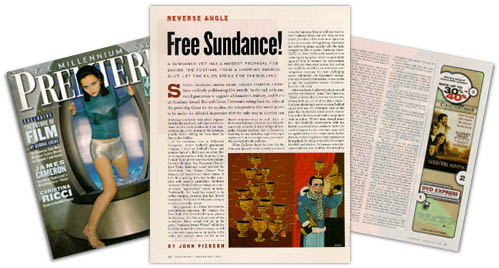
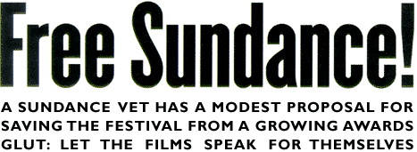
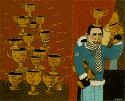

|
|

 PIRITS. GOTHAMS. SILVER BEARS. GOLDEN STARFISH. I HATE these endlessly proliferating film awards. In the end, only one award guarantees to upgrade a filmmaker's obituary, and that's an Academy Awar d. But with James Cameron's taking back the helm of the good ship Oscar for the studios, the independent film world seems to be under the deluded impression that the only way to clamber out of steerage is to invent more prizes, dispense them by the truckl oad, and hope that the industry and the media swallow the hook. And, maddeningly, in the short term this technique actually works, shihing the focus from the films to the filmflam. In the conference room at Wildwood Enterprises, Robert Redford's production company, I don't see Redford's Oscar, and come to think of it, Bob's not here either. But many august members of the Sundance Film Festival National Advisory Board are present: O ctober's gingham Ray, Paramount Classics' Ruth Vitale, distributor turned producer Ira Deutchman, Sony Pictures Classics' Tom Bernard, and Lion's Gate's Mark Urman. It feels like a meeting of the five families, complete with focaccia sandwiches. Sundance codirector Nicole Guillemet brings the annual festival "improvement" session to order. Traditionally, the board has seemed to be rubber-stamping decisions that had already been made. And much of this year's colloquy revolves around the awards. This juggemaut of a festival has been the prize-inflation pacesetter. (By contrast, the New York Film Festival still has no prizes.) At Sundance, if a film wins any one of the (minimum) fifteen awards that are up for grabs, "Sundance Award Winner" will b e the lead item in most of its press coverage, as well as a constant companion on the poster, in the trailer, and, perhaps, above the title on the theater marqueeÑeven in such places as downtown Baltimore. But nobody at the table wants any cutbacks. I fee l a twinge of sympathy, because everyone here is desperately searching for any marketing angle that might register with an increasingly savvy yet incredibly overloaded indie audience. When Guillemet drops the news that the American Spectrum section (widely perceived to be the Sundance B team) will now have its own Audience Prize, not only does no one protest, but they call for even more Spectrum prizes as a means of heightening awaren ess and achieving greater equality with the main competition. But if neither Hurricane Streets (1997) nor Slam (1998) really benefited from capturing the top prizes, what's so great about equality? Not to mention the inconvenient fact that just three year s earlier, this section was explicitly created as an alternative noncompetitive sanctuary for more challenging works. Admittedly, the Spectrum's conception wasn't exactly immaculate; it was meant to nip the competitive upstart Slamdance Festival in the bu d.
 After two hours, Guillemet looks at me and says that my silence is "scary." So I burst out, "Here's a radical idea. If you want to level the playing field, get rid of all the damn prizes." Guillemet disammingly points out that Redford agrees with me. It' s absolutely clear at this point that the festival's media stature, reputation, and visibility wouldn't suffer one jot from such an action. (What's more, though many feel that Redford's involvement with the festival is essential to its continued health, h e could disappear for the next three years with no significant loss.) It's a made event. In fact, there is much to be gained, if not a paradise to be regained, by doing away with the competitive bells and whistles. As someone who's disagreed publicly with Redford, I'm tickled by the idea of making common cause. But I've heard that he had wanted to rein in the prizes back in 1996, just before Sundance added the Director's Prize. Herewith, a quick history of a prized past.In Sundance's darkest hour, when its fate hung in the balance, there were only four lonely awards. The catalog that year, 1988, practically apologized for even that degree of competition, and explicitly described every filmmaker as a winner for having be en selected. When a jury of apparent zealots named the experimental Heat and Sunlight Best Dramatic Feature, snubbing the likes of John Waters's Hairspray, the audience moaned. Festival head Tony Safford had the answer the following year: four new prizes, including the Audience Award - and these came not a moment too soon, since Sundance godhead sex, lies & videotape (1989) was the people's choice, while the jury preferred True Love. By 1993 there were ten awards, all of them sponsored by companies such as Mercedes-Benz, and the status quo didn't change for a while. Then something strange happened with two features from the 1995 lineup. James Mangold and Matthew Harrison, the directors, respectively, of Heavy and Rhythm Thief, both received a Special Jury A ward. Afterward, the ads for both films proclaimed a nonexistent Sundance Best Director nod. By 1997, in order to protect the integrity of its awards, the festival was "forced" to add the aforementioned Director's Prize. So what's really so bad about all of this? Geoffrey Gilmore, festival director since 1991, makes the "worthy film" argument. If a socalled worthy film such as Sunday (1997 wins the Grand Jury Prize - which adds to its stature, which makes the press sit up and take notice, which catalyzes a theatrical distribution deal - then the system is working. But when filmmakers compete for these prizes with ever-increasing selfishness, if not ruthIessness, how can they support or enjoy or even see one another's work? I know this will sound hopelessly naive, but Sundance was supposed to be different - a collegial, communal (gulp) atmosphere where the films came first. Now the Dramatic Competition directors hit the ground vying at the Salt Lake City airport, and they never look back. For the documentarians, who at least have a colIective-underdog syndrome in common, prize anxiety is sublimated until the final 48 hours, when even they admit it gets to them. Redford knows there is nothing he can do about the manic industry d eal making, but he could make the award competition go away with a snap of his fingers. Why not try it for one year and see if filmmaker quality-of-life improves? Gilmore assured me that it wouldn't, because first-time directors are living proof of the "' 9Os-ballplayer phenomenon: 'Give me the $90 million now. " Even if Gilmore's right about that, there are at least six other major benefits to a prizefree Sundance:
The prizes were the bait that initially lured the media to Sundance. Now the press has nowhere else to go in January. The biggest benefit of a one-year prize moratorium would be much-improved press coverage that zooms in on the work itself, instead of th e latest betting line on the favorites. Each journalist would have to see as many films as possible to make up his or her own mind. This is admittedly an astonishing concept, and Redford would have to be the one throwing down the gauntlet. But it would al l be a pointless exercise if the media simply substitutes more coverage of wheeling-and-dealing hijinks in what will always be a co-opted environment. There's another potential risk if Sundance were to adopt this modest proposal. Strangely enough, it was Gilmore who raised the specter. Festival veterans look back at the '80s Park City and slag all the save-the-farm, good-for-you granola movies that see med to dominate that pre-prize era. What if you were to strip Sundance 2000 bare, only to discover that, on their own terms, that year's U.S. independent films were not much better? Simple recovery procedure: Give every single film its very own prize the following year.
|
{% include footer.html %}
© 1997 - 1999 Grainy Pictures, Inc. |